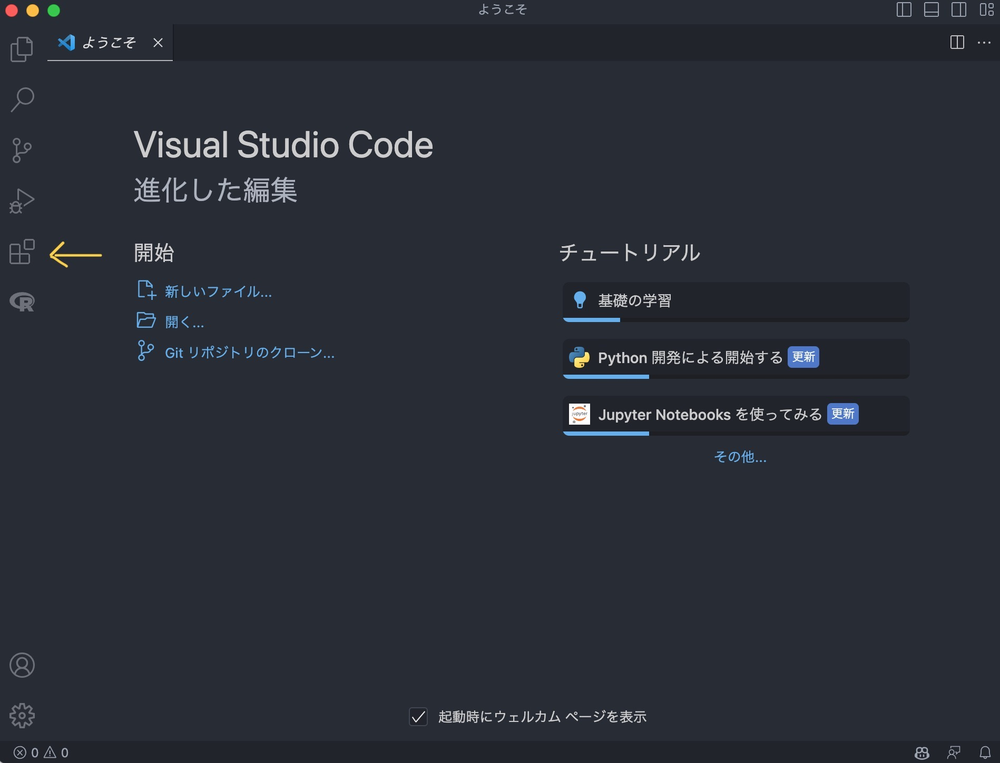

1 + 2Rの使い方
第3回講義の到達目標は、
- R、Rstudio、Visual Studio Code、Quartoのインストールができる。
- Posit Cloudにログインして、ブラウザ上でRstudioを使うことができる。
- Visual Studio CodeでRのソースコードを書くことができる。
- Visual Studio CodeでQuartoを使って、レポートや論文を書くことができる。
第3回講義の到達度検証のための課題は、以下の通りです。
- Visual Studio Codeで必要な拡張機能をインストールする。
- Visual Studio Codeで、Rのソースコードを書いて実行し、結果を見る。
- Visual Studio Codeで、Quartoを使って短いレポートを作成する。
- Visual Studio Codeで、Quartoを使ってスライド資料を作る。
正直、Rの使い方を説明したウェブサイトや書籍、動画はたくさんあります。 そういったものを見てもらった方が早いです。
RとRstudio
教科書を見ながらRとRstduioを自分PCにインストールしてください。 以下のウェブサイトが超参考になります。 自分のPCのOSに応じて、資料を見ながらインストールしてください。
あるいは、Posit Cloudを使ってウェブ上でRstudioを使えるようにしてください。
Visual Studio Codeの使い方
Posit Cloudを使わずに、自分のPCでRを使うことを選択した人は、以下の作業に進みますが、まずは矢内先生のウェブサイトなどを参考に、RとRstudioをインストールはインストールしておいてください。
教科書では、Posit社のRstudioの説明をしていますが、RstudioはR専用のIDE（統合開発環境）で、R以外の言語を書くことはできませんし、少々重たいです。 そこでここでは、Microsoft社のVisual Studio Codeを使ってRを書く方法を説明します。
マイクロソフト社のウェブサイトから、自分のPCのOSに合わせて、Visual Studio Codeをインストールしてください。
まずGoogle等で「Visual Studio Code」と検索して、オフィシャルサイトにアクセスします。

そして、「Visual Studio Codeをダウンロードする」をクリックすると、次のページにいきます。

ここから自分に合ったOSを選んで、ダウンロードしてください。 詳しい人なら、下の小さな項目から、適切なものをえらんでください。 MacBookでM2チップを使っている人は、MacのApple siliconのzipをダウンロードして、Zipファイルを展開してインストールしてください。
Quarto
次に、RstudioやVisual Studio Codeで、レポートや論文を書くためのパッケージであるQuartoをインストールします。 QuartoはRstudioを作ったPosit社が開発している文書作成システムなので、Rとの相性もばっちりです。
まずGoogle等で「Quarto」と検索して、オフィシャルサイトにアクセスします。

そして、「Get Started」をクリックすると、次のページにいきます。

ここから自分に合ったOSを選んで、ダウンロードしてください。
ここまでで、
- R (本体)
- Rstudio (R用IDE)
- Visual Studio Code (R以外の言語も書けるIDE)
- Quarto (レポートや論文を書くためのパッケージ)
のインストールが完了しました。 次に、Visual Studio CodeでRのソースコードを書くための準備をします。
VS Codeの準備
Visual Studio Code(以下、VS Code)の準備をします。 VS Codeを開くと、次のような画面が表示されます。 VS Codeは、機能を拡張するために、拡張パッケージをインストールすることができます。 VS Codeを起動して、左のメニューの中の、四角が4つ並んだアイコンをクリックしてください。

VS Codeの左のメニュー上部に拡張パッケージの検索画面が表示されます。 そこに拡張パッケージの名前を入れて、必要なものをインストールしていきます。 以下の拡張パッケージは、Rの分析をするために必要あるいは推奨されるものです。
-
Japanese Language Pack for Visual Studio Code: VS Codeの日本語化 -
R: とりあえず入れておく -
Quarto: Quartoを使うために必要
とりあえずこの3つを入れておけば、このプレゼミでは十分です。

フォルダを開く
VS Codeでは、分析に使うCSVファイルや、分析のためのRファイル、レポートや論文を書くためのQuartoファイルを、一つのフォルダにまとめておくと便利です。 分かりやすい場所にフォルダを作成し、好きな名前をつけてください。
VS Codeの上部メニューの中の「ファイル」をクリックして、「フォルダーを開く」をクリックして、先ほど作成したフォルダを選択してください。 すると、左のメニューにフォルダの中身が表示されます。まだ何も入っていなければ、何も表示されません。
VS Codeではフォルダを指定して開いておくと、そこが作業フォルダとなり、Rは常にそのフォルダの中を参照するようになります。
Rスクリプトの書き方
ではVS Code上でRのソースコードを書いてみましょう。 新しいファイルを作成するためには、上のメニューから「ファイル」をクリックして、「新しいファイル」をクリックしてください。
するとメニューが表示されその中に「R Document」を選ぶと、Rのソースコードを書くためのファイルが作成されます。 Rのソースコードは拡張子が.rというファイルになります。 拡張子が何か分からないひとは、ググっておいてください。 WindowsやMacOSでもファイルの拡張子が表示されるように設定しておいてください。
Rの基本操作
ここまでの準備が出来ていれば、画面にRのソースコードを書くためのファイルが表示されているはずです。 何も書かれていないので、まずは何か書いてみましょう。 まずは、1+2を計算してみます。
と書いて、その行にカーソルがある状態で、Ctrl + Enterを押すと、その行の計算結果が表示されます。
[1] 3あとは教科書をみて、練習しておいてください。 以下の事ができるようになっていればOKです。
パッケージ
Rはパッケージを使って機能を拡張することができます。
-
install.packages()関数でパッケージをインストールして、 -
library()関数でパッケージを読み込むと、
拡張した機能を使えるようになります。 教科書やこの資料で使う関数はたくさんあるので、その都度説明しますが、ほぼ必ずつかうのが、tidyverseというパッケージ群です。
以下のコードを実行して、tidyverseをインストールしてください。
install.packages("tidyverse") # 最初の一回だけ実行そして、ほぼ毎回以下のコードを実行して、tidyverseを読み込みます。
ついでに、今後使うであろう次のパッケージもインストールしておいてください。
install.packages("bloom") # 結果の整形
install.packages("ggthemes") # グラフの見た目
install.packages("modelsummary") # 回帰結果の作表
install.packages("kableExtra") # 表の整形
install.packages("gt") # 表の整形
install.packages("patchwork") # グラフを並べて表示Githubとの連携
GitHubは、Gitというバージョン管理システムを使って、ソースコードのバージョン管理をクラウド上で行うことができる無料サービスです。 使いこなすには、少々勉強が必要ですが、使えれば非常に有用なので、是非やってみてください。 Visual Studio CodeはGit/GitHubとの連携も簡単なので、複数人でウェブ開発やプログラミングをする場合には、非常に有益です。
まずは、GitHubのウェブサイトにアクセスし、アカウントを作成してください。
そこから先は、書籍やウェブサイトを参考にしてください。 例えばこんな本が便利です。


GitHub Copilotを使う
GitHub Copilotは、AIがコードの作成を支援してくれる超便利なツールです。 学生は無料で利用できるので、プログラミングを学習しようとしている人は、導入の検討をしてみてください。
まとめ
ここでは、
- Rのインストール
- Rstudioのインストール
- VS Codeのインストール
- Quartoのインストール
を行い、VS Code上での分析・レポート作成環境を整えました。 また、ソースコードの書き方や、パッケージのインストール方法、GitHubとの連携方法を学び、GitHub Copilotの紹介をしました。